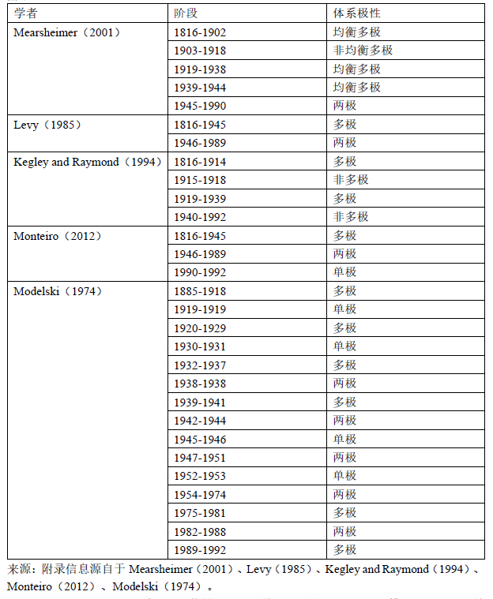
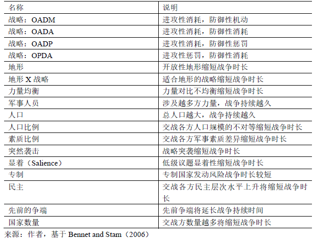
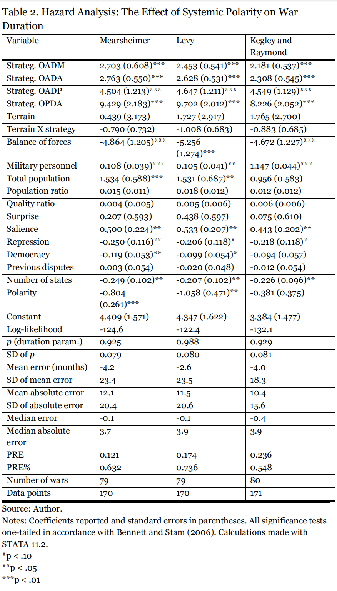
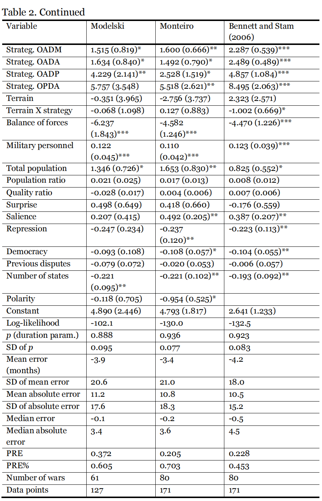
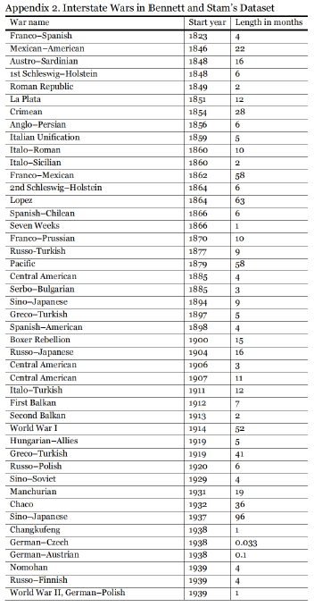
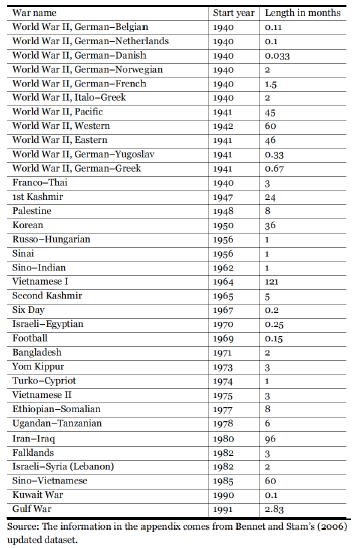

收录于合集 #国际安全 4个

作品简介
作者： Marco Nilsso，瑞典延雪平大学（Jönköping University）教育与传媒学院副教授，政治学资深讲师，研究领域为国际政治中的暴力冲突。2010-2014年曾担任瑞典哥德堡大学（University of Gothenburg）资深政治学讲师，2010年获哥德堡大学博士学位，自2013年起担任瑞典政治科学协会国际关系部成员。
编译： 曾庆鸣（国政学人编译员，南开大学周恩来政府管理学院硕士研究生）
来源： Nilsson, Marco. “The Magnitude of Warfare Revisited – System Polarity and War Duration.” Journal of Strategic Security 14 , no. 2 (2020): 25-46. DOI: https://doi.org/10.5038/1944-0472.14.2.1885.
归档： 《国际关系前沿》2021年第10期，总第37期。
内容提要
国际冲突研究中难以解决的争论之一是极的数量与战争规模之间的联系。对于国际体系结构效应的推测可以追溯到威斯特伐利亚条约。本文以以往研究少有关注的战争持续时长为焦点重新审视这场争论，并首次在理论上探讨了体系中极的数量与战争持续时间二者的联系。它还采用了风险模型来统计检验五种以极的数量所定义的不同体系是否与1816年至1992年间发生战争的持续时长相关。统计结果为国际体系中极的数量增加与平均更持久的战争相关的假设提供了初步支持。本文的经验实证分析与理论探讨对于理解美国霸权衰落的影响较为重要。
文章导读
01
导言
战争规模这一概念由几个部分组成，诸如战争数量、涉及国家数量以及战争持续时长，所有这些都与体系中极的数量有潜在关联。本文使用风险模型（Hazard model）检验五种不同极的数量划分所定义的体系是否与战争持续时长这一重要的衡量国际体系和平程度的标准相关。研究重点放在了未在以往研究中被充分探讨的发生持久战争的风险上，而非放在战争风险和蔓延程度上。论据以源自现实主义和理性选择视角的二阶段过程为基础。第一阶段决定了在不同形式的体系极性下哪种战争类型可能发生，而第二阶段决定了讨价还价空间会何时出现。基于可以测量权力聚集性的想法，例如通过计算特别强大的国家或国家联盟的数量，学者已经鉴别出至少三种理想的体系：单极（只有一个支配国家），两极（两个支配国家）和多极（三个或更多主导国家）。
然而体系中的极的数量对结果的影响一直是一个有争议的问题。根据卡尔和摩根索等经典均势理论家的观点，卡普兰表示多极体系不太倾向于发生战争。多伊奇与辛格也主张多极减少了战争风险，而华尔兹观察到冷战强国关系的相对稳定，更倾向于两极（减少战争风险）。此外，米尔斯海默, 列维和凯格利宣称多极增加战争风险。一些学者使用战争国家数-持续月份数作为因变量。聚焦一定阶段内战争涉及的国家数- 持续月份数是衡量体系内战争规模的有效手段，因为它与单纯评估战争数量相比能产出了不同的信息。的确，战争的蔓延程度并不是影响战争规模的唯一变量。战争规模的概念由三个部分组成，即战争数量，涉及战争国家数量以及战争持续时长，都影响一定阶段内体系经历的战争国家数- 持续月份数。
由于战争规模能影响体系稳定的水平以及相关的变革风险，因此理解战争规模及其三个组成部分是国际政治研究中的一项重要任务。显然，多个国家间的持久战争，增加了如世界大战期间的体系变革风险，而短暂有限的战争更有可能让体系保持稳定。因此战争持续时长不仅通过增加战争国家数- 持续月份数，同时也可能影响体系变革的风险，从而影响体系内的战争规模（和平程度），两者都使得分析工作变得重要。为了解决这一知识缺口，本文通过实施带有几种控制变量的持续时长分析，检验了五种不同划分中由极的数量所定义的体系对战争持续时长的影响。
02
理论
为什么极性与战争持续时长相关？尽管哈斯和列维基于经验实证结果，认为多极与持续最短时长的战争相关，然而他们并没有从理论上探讨为什么预期会有这种联系。与哈斯和列维相反，本文认为多极更有可能与更长的战争持续时间相关。在第一阶段，体系极性影响何种类型的战争可能爆发。正如蒙泰罗指出，单极往往引发“单极国家与顽固小国（Recalcitrant minor power）”之间的冲突。这种选择偏差可能造成交战双方军事实力之间的不均衡，使得单极国家很容易打败小国。然而，当极的数量越多时，由于可结盟伙伴数量增多，通过联盟进行外部制衡（External Balancing）变得更加灵活。实际上，如果单极带来更多不对称冲突（Asymmetric conflict），平衡者的作用在多极中变得更加突出，从而产生对称冲突。这种多极下的制衡通过制造对称冲突来延长战争持续时间，在这种冲突中，交战各方的权力更加势均力敌并且难以迅速打败对方。虽然不对称冲突无需长时间谈判就可以结束，因为较强一方可以迅速压制较弱一方，对称冲突更多的时候涉及创造讨价还价空间的过程，也就是找到一个双方都能接受的谈判解决方案。体系中极的数量会影响这个过程的持续时间，因为系统结构提供的关于预期战争结果的信息数量各不相同。米尔斯海默对于为什么理性国家发动战争这一谜题的回答，源自于无政府状态下普遍的不确定性：当理性国家领导人因为缺乏信息并对相对权力持异议而误判时发动战争。
第二阶段包括创建讨价还价空间，时间长短取决于外部参与者调解的意愿，以及此类调解的功效。在单极和两极中，大国很可能是对现状感兴趣的国家，对于防止正在进行的冲突升级为世界大战是有利益考量的。对现状满意的主要国家因此有利益去阻止战争升级为引向体系变革的持久性世界大战。一个国家拥有更大权力，会有更强倾向（防止体系变革），这种倾向当成为拥有霸权地位的单极国家时最甚。即使在双方处于竞争状态的两极格局中，双方均可能比在单极格局中更担心失去地位。在多极格局中，体系中缺乏有同样意愿的支配行为体维持现状并运用影响力尽快结束其他国家间的战争。总的来说，考虑到体系中极的数量对可能爆发战争的类型以及国家可能多快解决冲突的影响，多极格局潜在地与最持久的战争相关。这就引出了如下可检验的假设：体系中极的数量上升将导致平均更持久的战争。
03
数据分析
学者不仅对于体系极性的影响意见不一；也许更根本的是，当他们定义和衡量极性时，在应该考虑哪些因素方面同样存在分歧。因此，本文采用分别由莫德尔斯基，列维，凯格利以及雷蒙德提出的五种不同的体系衡量方法。米尔斯海默提出极性分为三个类别：不均衡的多极（有潜在霸权的多极格局）、均衡多极（无潜在霸权的多极格局）以及两极。列维和蒙泰罗也得出三个变型：多极、单极与两极。列维的数据止于1985年，但可以假定两极格局延长至1989。蒙泰罗同意列维的分类但将1989年后增列为单极。凯格利和雷蒙德专注于多极，因此他们将其他形式的极性定义为非多极（Non- multipolarity）。更少的类别减少了信息的数量但仍然能采用它们以验证假设。莫德尔斯基改为使用四个衡量体系实力分配的类别：分散/多元（Dispersed/pluralistic）、多极、两极与单极。他同时诉诸更客观的标准来决定历史的分期化。如果一个国家至少拥有可用军事力量的50%，则为单极体系。并且如果两个国家共同拥有超过 50% 的权力，则为两极（每个人至少持有25%）。若三个或更多国家共同拥有至少50%并且每方拥有5%-25%权力，则为多极体系，否则为分散/多元体系。对于国际体系不同的分类参见附录1。
附录1

本文运用风险分析评估体系内极的数量对战争持续时长的影响。运用风险模型分析战争持续时长的长处在于可以在观测周期的跨度内分析不同假设数值的变量。迄今为止关于战争持续时长最完整的论述出自贝内特和斯塔姆。关于极的数量对于战争持续多久的影响进行充分检验，最好的方法是使用贝内特和斯塔姆的变量作为统计控制。由于可用数据包括年度测量值的变量，本文采用相同的风险分析技术和随着时间变化的协变量。可用数据正如在贝内特和斯塔姆的新模型中，包含了1816年-1992年爆发的国家间战争。
在数据分析中，米尔斯海默的非均衡多极编码为1，均衡多极编码为2，两极编码为3。极的数量在均衡及非均衡两极中相同。然而，米尔斯海默认为国家将在均衡多极格局的冲突中倾向于推诿责任（Buck- passing）。推诿责任将阻碍权力均衡的出现并增加不对称战争的风险，相同情况下（战争时长）可能要比在非均衡多极格局中更短。凯格利和雷蒙德的多极阶段编码为1，非多极阶段编码为2。列维关于极性的测量编码如下：多极编码为1，两极编码为2，单极编码为3（莫德尔斯基的数据并没有关于分散/多元能力分配的实例）。
表格1来自贝内特和斯塔姆，表明控制变量及假设对战争持续时长的影响，包括四个虚设变量对观察到的进攻者（进攻性）与防御者（防御性）的策略进行编组。有三种可能的策略：机动（Maneuver），例如闪电战（Blitzkrieg）；消耗（Attrition），如果国家间以遭遇战形式互相攻击；惩罚，如果平民是首要目标且交战方使用游击战术。地形是虚设变量，0代表开放地形而1代表不可通过的地形。为了衡量地形与战略的互动，贝内特和斯塔姆乘以以地形为单一序数的策略变量。力量均衡是最大一方全部实力比上交战方全部实力。战争相关（COW, Correlates of war）能力值根据国家至战场的距离进行折合。总军事实力采用战争相关数据库（COW）国家实力以百万为单位衡量各方总军事人员数。
贝内特和斯塔姆通过国家军事支出除以军事人员再得出优势方比劣势方比例的方法，以此估算军队军事素质的差别。突然袭击衡量的是在战争阶段任一时间发生的战略突袭，编码从0（没有或对等的突袭）到1（大型及非对等突袭）。根据霍斯提的分类，议题显著性（Issue salience）编码为0（议题对双方都不显着），1（议题对一方显著）和2（议题对各方都显著）。贝内特和斯塔姆通过运用Polity II政体数据集中的政治参与竞争性变量（Competitiveness of participation variables），汇总各方的专制行为以衡量各方政府的专制程度。取值范围从-5（重大且常规的政治竞争）到-1（不允许重大反对活动）。同时通过Polity II数据集中的制度化民主变量（Institutionalized democracy variable），从0（高水平民主）到10（低水平民主）以建构民主变量。通过COW数据库中国家间军事化争端（Militarized interstate dispute, MID)数据集，计算十年内在每场战争爆发前持续至少三十天的所有国家对立状态的平均争端数量。进而用总争端数除以每场战争内国家的数量。国家数量表示基于COW国家间战争数据集，有多少国家卷入战争。
在风险模型中没有最佳的拟合度量（Best measure of fit）。然而，根据贝内特和斯塔姆，本文估计了PRE%即实际战争持续时长比例，作为比例误差减少（Proportional reduction in error， PRE）衡量不同模型对数据的拟合程度。这样提供了一种直观而有说服力的模型拟合度量。本文通过首先估算唯常数模型并汇总对所有战争的绝对预测误差以计算PRE%。而后再以控制变量以及用不同极性衡量方法汇总所有战争的绝对预测误差（Absolute prediction error）以此估算总模型。比例误差减少（PRE）是通过唯常数模型中的误差减少值减去总模型中的误差减少值，再除以唯常数模型中的误差减少值得出的。最终，PRE%通过上述值除以实际战争持续时长的预测误差总和得出。
表1 控制变量

贝内特和斯塔姆的分析与表2中的总模型相比，包括五种对体系的划分，并没有反映实质性的区别。控制变量中的战略乘以地形不再统计上显著。然而，表二中分析的主要结果部分地证实了假设，表明米尔斯海默，列维和蒙泰罗对于极的数量和战争持续时长的测量在统计学意义上有较大相关性。多极格局带来最持久战争，不仅与哈斯的发现相矛盾，也与列维的发现相矛盾，这些发现都与本分析基于相同的国际体系极性分类。
正系数（Positive coefficient）表示更长的战争持续时间；负则意味者较短的战争持续时间。对米尔斯海默得出的系数-0.804取幂，得出的风险比（Hazard Ratio）为 2.104，这意味着当从不平衡的多极格局向平衡的多极格局，或从平衡的多极格局到两极格局转变时，战争终止的机率增加了110%。列维和蒙泰罗得出的系数为-1.058和-0.954，收益率得出的风险比相应为2.850和2.440，这意味着当多极格局向两极格局，或两极格局向单极格局转变，战争终止的风险分别增加185%、144%。因此这三种模型表明体系中的极数增加将导致平均更持久的战争。两极期间发动的战争比多极化期间发动的时间短，单极期间战争持续时间最短。
表2 风险分析：体系中极的数量对战争持续时长的影响
 
观察表2“风险分析：体系中极的数量对战争持续时长的影响”中的PRE%，而不仅仅是PRE，三个对于极性的衡量具有统计显著性的模型同样似乎非常匹配数据并且是对贝内特和斯塔姆的分析进行了明显的改进。相对于完全常数模型造成相关的预测误差，作为实际战争持续时长的比例，与贝内特和斯塔姆初始模型减少40%相比，米尔斯海默的模型减少了63%，列维的模型减少了74%，蒙泰罗的模型减少了70%。因此，将这些对体系极性的测量加入初始模型会提升它的解释力。
04
结论
体系中极的数量对战争频率影响的经验实证结果仍不清楚。然而，目前的结果为假设提供了初步支持，即极的数量增加与更持久的战争相关。尤其是米尔斯海默、列维和蒙泰罗对极性的衡量表明多极期间发生的战争是最持久的。此外，通过聚焦战争持续时长而非战争频率，研究结果支持对华尔兹经典论证的重组，即多极格局是最不稳定的国家体系。如果极的数量增加与更加持久的战争相关，被定义为体系和平程度的体系稳定性也会下降，因为体系会经历涉及国家数和持续月份数更多、更为持久的战争。体系的稳定或和平程度（战争规模）是通过战争爆发的多少和战争爆发的快慢来衡量的。研究结果同样有趣，因为战争持续时长可以潜在地影响通过体系性变革风险定义的体系稳定性。只要类似世界大战等冲突加剧体系变革的风险，现状存续时长将会受到多极的消极影响。然而，仍不明确国际体系多极阶段（现状存续）是最短的，因为两极和单极同样有限制长久前景的自身不稳定来源。本研究表明，滑向具有几个大国的多极格局将增加危险后果的机率即平均更长的战争持续时间。持续越久的战争不仅经常造成更多的人类苦痛，同时为交战各方造成更沉重的经济负担，减少战争预期收益。持续越久的战争同样与战争发动者的失败相关。战争在现实主义传统中是一项可能的外交政策选择。然而，经典现实主义直接规定，结构现实主义假定，战争是应对无政府状态问题的理性决策。如果国际体系朝向多极格局，做出理性决策以面对国际体系挑战应该尽力认清发动战争的预期效应减弱了。总之，现实是本研究必须检验几种统计模型，表明了此领域仍然理论化不足，正如学者对于如何定义以及如何对体系极性操作化各执己见。二分变量（Dyad- level variables）对于理解国家冲突行为也非常重要并且现实主义者经常认为有必要运用非结构性变量补充他们的理论。然而，对于极的数量如何与战争持续时长相关的分析证明，政治现实主义对于战争与稳定的结构性相关（Structural correlates）具有显著的解释力。
译者评述
本文是一篇综述式的理论验证文章。作者观察了体系极性与战争规模以及战争持续时长存在潜在关联，以此作为研究起点提出研究问题。通过统计学风险模型的定量方法，对各类变量进行详细谨慎地细化、操作化手段，检验学界对于体系极性与战争持续时长的相关关系以及因果效应的假设，初步经验证实了“体系极数越多，战争持续时间越长”的命题，作为本文的核心观点。本文主要创新点与不足主要有以下几点：
一是概念的操作化方法和细化是本文一大亮点。作者通过概念操作化和细化使得重要的抽象变量以及待检验假设具体化为在国际体系中可以观测并且已有详尽数据的一系列变量。在进行操作化时，作者不是运用单一指标，而是一系列的指标群并进行适当的比例加权，这样使得操作化后的具体变量不至于失真，可信性更高。比如对于虚设变量的战略集，进攻性和防守性用突然袭击、闪电战、攻击平民等具体行为来衡量；战争相关能力通过交战方军事人员数量，军事素质差异等衡量。同时作者熟练运用了COW、Polity政体数据库等常用国际关系与国内政治数据库进行风险模型测量。对于学习实证定量方法的研究者而言，尤其是对于理论检验型文章而言，本文可以提供一种标准的求证过程模式。
二是样本范围大，时空跨度广。对于国际体系极数与和平相关的问题，学界文献汗牛充栋，但多数属于质性分析，采用的是描述性的小样本案例研究，这样就会遇到选择性使用案例、以及案例所反映历史时长较短等问题。本文选取1816-1992年近两个世纪内的大范围样本，扩大了作为经验证据的容量，降低了在检验理论过程中的偶然性偏差。
三是因果效应简单明了，但没有深入解释背后的因果机制。文中充分观察和描述了国际体系极性变化与战争时长改变这两个现象，并且这种现象是可实证且反复出现的，首先在文献回顾的基础上进行逻辑演绎获得假设，通过较严谨的经验验证初步证实了核心假设，探寻到两者之间的因果效应。但未能进一步把因果过程“去黑箱化”完整解释“为什么”，即本文待验证的核心假设体系极性变化为什么以及如何导致战争持续时长延长的过程。缺少了对因果机制的详尽解释，下一步可能构建的预测性理论就无从谈起。通篇的变量和统计不仅不会使得文章可信度增加多少，反而会落入目前学界面临的思想及理论缺失，陷入“统计陷阱”，所以在理论思想和方法论证两者之间需要找到平衡点，不偏不倚。
附录2
 
词汇整理
闪电战 Blitzkrieg
风险模型 Hazard model
推诿责任 Buck-passing
不对称冲突 Asymmetric conflict
外部制衡 External Balancing
战争相关 COW, Correlates of war
议题显着性 Issue salience
拟合度量 Best measure of fit
二分变量 Dyad-level variables
政体数据库 Polity IV
审校 | 谢菁 王川
排版 | 邱意雯
文章观点不代表本平台观点，本平台评译分享的文章均出于专业学习之用, 不以任何盈利为目的，内容主要呈现对原文的介绍，原文内容请通过各高校购买的数据库自行下载。

国政学人
支持学术公益与知识传播
微信扫一扫赞赏作者 __赞赏
已喜欢，对作者说句悄悄话
取消 __
发送给作者
发送
最多40字，当前共字
上一页 1/3 下一页
长按二维码向我转账
支持学术公益与知识传播
受苹果公司新规定影响，微信 iOS 版的赞赏功能被关闭，可通过二维码转账支持公众号。